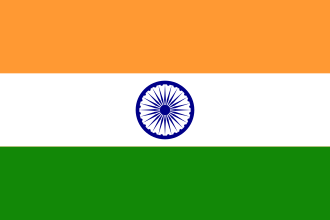

Indian Cricket Team

.webp)
The India men's national cricket tea, also known as Team India or Men in Blue ,[10]
represents India in men's international cricket. It is governed by
the Board of Control for Cricket in India (BCCI) , and is a Full Member of the International Cricket
Council (ICC) with Test, One Day International (ODI) and Twenty20 International (T20I)
The BCCI is the richest governing body of cricket in the world and is part of the Big Three of international
cricket, along with Cricket Australia and the England and Wales Cricket Board.[13][14]
Content
-
History
-
Early Year
- WORLD Cup 1983
- Match fixing
- Rebel league
- Indian Premium League
-
Reform 2017:Committee Of Administators
- Domestic Cricket
- Domestic Competitions
- Men's domestic Cricket
- Women's Domestic Cricket
History
Early Year
In 1912, an all-India cricket team visited England for the first time, sponsored and captained by Maharaja of
Patiala. In 1926, two representatives of the Calcutta Cricket Club travelled to London to attend meetings of the
Imperial Cricket Conference, the predecessor to the current International Cricket Council. Although technically
not an official representative of Indian cricket, they were allowed to attend by Lord Harris, chairman of the
conference. The outcome of the meeting was the MCC's decision to send a team to India, led by Arthur Gilligan,
who had captained England in The Ashes.[citation needed]
World Cup 1983,Victory
BCCI's logo is derived from
Star of India'. According to Information Commissioner Sridhar Acharyulu, BCCI's logo was designed by the
British Raj in 1928. It is 90% similar to Star of India sign.
[17][18]
,
Domestic Cricket
Domestic Competitions
The BCCI organises the following domestic cricket Competitions:
- Ranji Trophy
- Vijay Hazare Trophy
- Syed Mustaq Ali Trophy
- Duleep Tophy
- Irani Cup
- Deodar Trophy
- Indian Premier Trophy
- BCCI Corporate Trophy
| Position |
team |
Rating |
Point |
|
|
Test
ODI
T20
Test
ODI
T20
| 1 |
Australia |
128 |
122 |
204 |
2459 |
1458 |
1265 |
Input Value